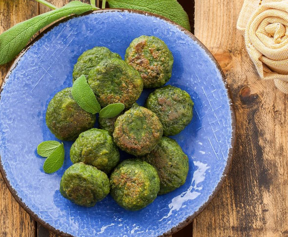
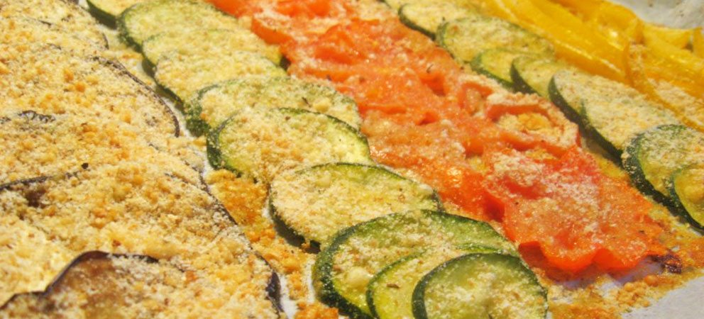
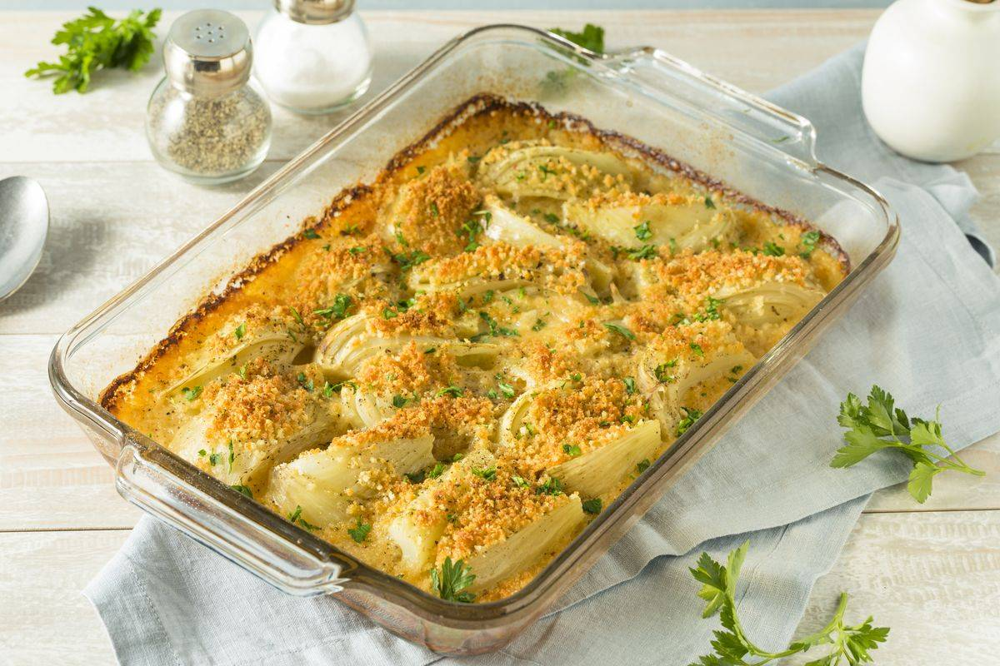

- 4 zucchine
- sale e olio q.b.
- 2 cucchiai formaggio grattugiato
- 1 mozzarella tagliata a dadini
- 1 uovo
- 50 gr pangrattato
Lava e taglia le zucchine nel senso della lunghezza. Scavale e togli la polpa.
Riponi le zucchine svuotate su una teglia rivestita di carta forno e cospargile di sale ed un filo di olio ed infornale a 180 gradi statico per 10 minuti.
Fai scaldare in padella un filo di olio in padella e cuoci la polpa delle zucchine a fuoco medio per 5 minuti. Al termine della cottura di questa, lascia intiepidire la polpa ed aggiungi a questa il formaggio grattugiato, la mozzarella a dadini, l’uovo, il pangrattato ed amalgama bene.
Riempi le zucchine con l’impasto e cuocile in forno statico per 20 minuti a 180 gradi. Concludi la cottura facendole dorare per 5 minuti con il grill.
Questo sarà un antipasto sfizioso, pratico e veloce che ameranno tutti!
Polpette di spinaci e ricotta

- 300 gr spinaci
- 250 gr ricotta
- 1 uovo
- 10 gr formaggio grattugiato
- sale e pepe q.b.
- 20 gr pangrattato
Fai bollire gli spinaci per 15 minuti, a fine cottura lasciali scolare ed intiepidire.
In una ciotola metti insieme la ricotta, gli spinaci, l’uovo, il formaggio grattugiato, una manciata di sale ed un pizzico di pepe e mescola energicamente con una forchetta. Aggiungi all’impasto il pangrattato e fai amalgamare bene tutti gli ingredienti, fino ad ottenere un impasto compatto. Quindi forma con le mani delle polpette e predisponile in una teglia rivestita di carta forno.
Spennella con l’olio ogni polpetta e fai cuocere in forno ventilato a 180 gradi per 15 minuti circa.
Tutti ne andranno matti!
Verdure gratinate al forno

- 300 gr zucchine
- 180 gr melanzane lunghe
- 250 gr peperoni rossi
- 250 gr peperoni gialli
- 20 gr olio evo
- q.b. sale e pepe
- 30 gr pangrattato
- q.b. origano
- 30 gr formaggio grattugiato
Per preparare le verdure gratinate al forno, per prima cosa procedi al taglio delle verdure: lava le zucchine, elimina le estremità e tagliale in diagonale a fettine di 2-3 cm di spessore; fai la stessa cosa con le melanzane. Infine lava i peperoni, svuotali dei semi e filamenti interni e tagliali prima a metà e poi a pezzi più o meno grandi quanto le fette di melanzane e zucchine.
Disponi le verdure tagliate in una teglia foderata con carta forno, puoi sovrapporre leggermente le fettine di zucchine e melanzane, dopodiché condisci con sale, pepe e l'olio di oliva. Inforna la teglia in forno statico preriscaldato a 180 gradi per 40 minuti.
Nel frattempo prepara la panatura per le verdure: in una ciotola metti il pangrattato con il formaggio grattugiato e l’origano e mescola bene.
Trascorsi i 40 minuti, estrai le verdure dal forno, con un cucchiaio distribuisci la panatura su tutte le verdure. Inforna nuovamente a 180 gradi per altri 10 minuti, poi aziona il grill a 240 gradi per 2-3 minuti: così le tue verdure gratinate al forno saranno pronte per essere servite!
Finocchi gratinati al forno

- 3 finocchi
- 80 gr pangrattato
- 20 gr formaggio grattugiato
- 2 cucchiai olio di oliva evo
- erbe aromatiche (timo, salvia, origano, prezzemolo)
- q.b. sale
Per preparare i finocchi gratinati al forno pulisci i finocchi eliminando le parti esterne e i ciuffi. Taglia a fette sottili con un coltello. Sciacquali abbondantemente sotto acqua corrente e tamponali con un panno pulito per eliminare l’acqua in eccesso. Metti i finocchi in una ciotola capiente. Aggiungi il pangrattato, il formaggio grattugiato e le erbe aromatiche che più preferisci.
Incorpora anche l’olio, aggiustando la quantità a seconda della tua preferenza. Mescola in modo che la panatura sia uniforme.
Distribuisci i finocchi su carta forno, senza sovrapporli. Cospargi i finocchi con la impanatura.
Inforna in forno statico a 200 gradi per circa 20 minuti, meglio se 10 minuti nel ripiano in basso e 10-15 minuti nel ripiano in alto con funzione grill.
In poco tempo avrai un contorno fit e saporito!